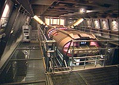
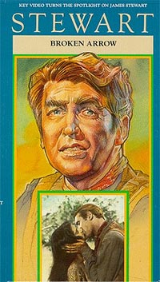
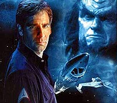

|
'Broken
Bow': arcos ou flechas?
 Alguns
detratores de Rick Berman e Brannon Braga dizem que a dupla,
atualmente no comando dos rumos de Jornada nas Estrelas,
faz questo de ignorar tudo que Gene Roddenberry havia
estabelecido sobre o vasto universo nascido do seriado original,
produzido entre 1966 e 1969. A cada dia que passa, fica mais clara
a impresso de que esses crticos, como diria Zagallo, tero de
engolir. Alguns
detratores de Rick Berman e Brannon Braga dizem que a dupla,
atualmente no comando dos rumos de Jornada nas Estrelas,
faz questo de ignorar tudo que Gene Roddenberry havia
estabelecido sobre o vasto universo nascido do seriado original,
produzido entre 1966 e 1969. A cada dia que passa, fica mais clara
a impresso de que esses crticos, como diria Zagallo, tero de
engolir.
Quando Gene tentou empurrar sua srie de fico para os
executivos da NBC, em meados dos anos 60, sua definio curta e
grossa do programa era de uma "'Caravana' para as
Estrelas" ("Caravana", ou "Wagon Train",
era um antigo programa de faroeste que narrava as aventuras da
conquista do oeste americano). E ele no estava mentindo: a Srie
Clssica guarda inmeras semelhanas com o gnero western,
que foi a coqueluxe do cinema americano naqueles tempos de ouro de
Hollywood.
 O
que ningum poderia prever que o faroeste pode estar fazendo
um retorno triunfal a Jornada, com Enterprise.
Duvida? Oua essa histria: um jovem heri resgata um inimigo
seriamente ferido e decide lev-lo de volta a seus iguais, em uma
tentativa de estabelecer a paz. Se voc pensou que esse o
enredo "Broken Bow", episdio-piloto de Enterprise,
errou. Tente "Broken Arrow".
isso mesmo, a histria-base de "Broken Bow"
a mesma de um filme de faroeste de 1950, chamado "Broken
Arrow", ou, em portugus, "Flecha Quebrada". A
produo, dirigida por Delmer Daves e estrelada por James
Stewart, conta uma histria ambientada em pleno velho oeste.
No filme, somos levados de volta a 1870. Nosso heri, Tom
Jeffords (James Stewart) chamado pelo coronel Bernall (Raymond
Bramley) para juntar-se a ele em uma misso para expulsar o chefe
Cochise (Jeff Chandler) da rea da montanha Graham --um plano
recusado imediatamente por Jefords --um soldado que j havia
combatido os ndios antes em batalha, mas que estava procura
de uma "outra" soluo para interromper a guerra
selvagem e sangrenta entre os brancos e os Apaches. Ele acaba
curando um jovem ndigena seriamente ferido, e decide lev-lo de
volta a sua tribo, em busca de uma soluo pacfica para o
conflito.
Ele decide aprender a lngua dos Apaches e tentar entender seu
modo de vida para entrar em um acordo com o grande Cochise, lder
da tribo Apache Chiricahua. No encontro, os dois homens se tornam
amigos por que ambos so 'sinceros'. Jeffords fez Cochise 'pensar
sobre o amanh', e por que irmos no poderiam viver em paz?
 Ento
Cochise aceita a proposta e permite que os mensageiros americanos,
antes bloqueados e capturados, passassem livremente pelo teritrio
Apache, mas mantm seu desejo de permanecer combatendo o exrcito
americano. Felizmente, o general Grant, em Washington, queria
mais. Ele enviou seu enviado especial, o genral Howard (Basil
Ruysdael) para concluir em seu nome um tratado de paz com os
Apaches. Cochise, em um ato de boa vontade, "quebra a
flecha" para tentar o caminho da paz por trs
"luas" (o nome indgena de Jeffords era "Trs
Luas").
A luta suspensa, um armistcio iniciado e um tempo de
grande sofrimento para Jeffords comea. Ele se apaixonou por uma
ndia chamada Sonseeahray (Debra Paget), com quem ele ia se
casar. Mas indgenas renegados liderados por Geronimo (Jay
Silverheels) e brancos contrrios paz atacam a noiva,
matando-a. Sua morte no foi em vo, entretanto. Ela serviu para
selar um tratado de paz aps dez anos de guerra cruel.
bvio que, olhado de perto, o enredo no exatamente o de "Broken
Bow". Mas mesmo assim, levando em conta a premissa
inicial dos dois --o estabelecimento de boas relaes entre dois
povos a partir da devoluo de um inimigo ferido--, difcil
acreditar que seja apenas coincidncia. Afinal de contas, alm
do enredo, o nome bastante parecido --at no sentido. "Broken
Bow", ou "Arco Quebrado", quase como
"Flecha Quebrada". Troca-se apenas a bala pelo revlver...
Como todos j devem saber, "Broken Bow" comea
com a queda de uma nave Klingon, perseguida por membros de uma raa
denominada Suliban, na Terra. O Klingon, embora sobreviva ao
ataque inimigo, acaba sendo vtima de um fazendeiro local, aps
deixar sua nave, espatifada sobre os campos de milho nas
proximidades de Broken Bow, uma cidadezinha no Estado de Oklahoma,
EUA.
 O
capito Jonathan Archer resgata o Klingon ferido e ordenado
pela Frota Estelar a levar o aliengena de volta a seu mundo
natal, apesar dos protestos dos Vulcanos, contrrios viagem.
Por fim, a devoluo do Klingon, aps intensos combates com os
Suliban, parece dar um primeiro passo de aproximao entre terrqueos
e Klingons.
No meio do caminho, descobrimos que os Suliban esto sendo instrudos
por um ser do futuro distante, envolvido em uma espcie de
"guerra fria" temporal, onde o sculo 22 apenas um
dos fronts, no que promete ser um dos grandes arcos no futuro
desenvolvimento da srie (e um dos grandes perigos para o futuro
do franchise tambm).
As informaes que apareceram na internet (de onde, inclusive, fs
engendraram a hiptese de que "Broken Bow" tenha
sido inspirado por "Broken Arrow") do a entender que o
nome do episdio uma referncia simples ao nome da cidade
onde o Klingon se acidenta. Mas como pode constatar o leitor,
parece haver mais sobre o ttulo do que o que se encontra
primeira olhada.
Se o piloto de Enterprise foi ou no baseado em um
faroeste de 1950, somente o tempo (conforme ele for exibido) ou os
produtores podero dizer. De qualquer modo, muitas outras crticas
esto sendo feitas, com relao ao piloto, sobre uma eventual
quebra da canonicidade (a "histria oficial") de Jornada
nas Estrelas.
O exemplo mais gritante o do primeiro contato com os Klingons,
que segundo Picard, no episdio "First Contact"
(quarta temporada da Nova Gerao), teria sido catastrficos,
sugerindo a criao da Primeira Diretriz. No parece ser o caso
aqui. Por outro lado, as crticas de que o primeiro contato no
poderia ser em 2151 no so corretas.
Embora McCoy sugira que os Klingons j so inimigos da Federao
h 50 anos em 2268 ("Day of the Dove", terceiro
ano da Srie Clssica), isso no quer dizer que eles
tenham sido inimigos desde o primeiro contato, que, se fosse este
o caso, teria ocorrido apenas em 2218. bem verdade que,
juntando a frase de Picard frase de McCoy, apostaramos em um
primeiro contato em 2218, j belicoso e agressivo, entre a Federao
e os Klingons. Mas suposies no so fatos. E o que veremos
em Enterprise, gostando ou no, sero os fatos sobre os
quais s podemos supor atualmente.
como disse um f outro dia em um frum de discusso de um
site americano: "como no vamos saber que todos os
personagens que vimos desde a Srie Clssica no tiravam
s 'D' no curso de histria do colegial?"
Vamos torcer apenas para que Rick Berman, Brannon Braga e sua
equipe tambm no tenham tirado s "D"s em histria...
principalmente, em histria do futuro.
Salvador
Nogueira, jornalista, escreve regularmente
sobre
a nova srie de Jornada nas Estrelas para o Trek
Brasilis
|